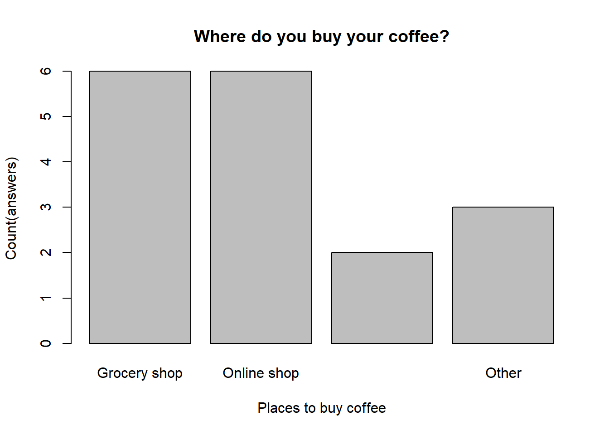
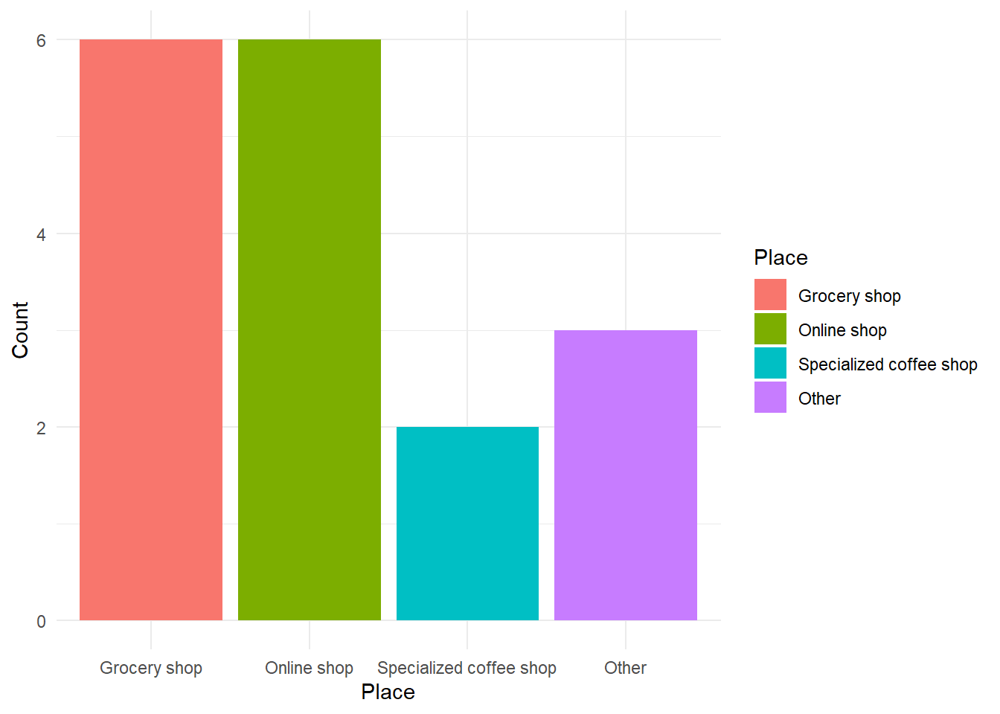
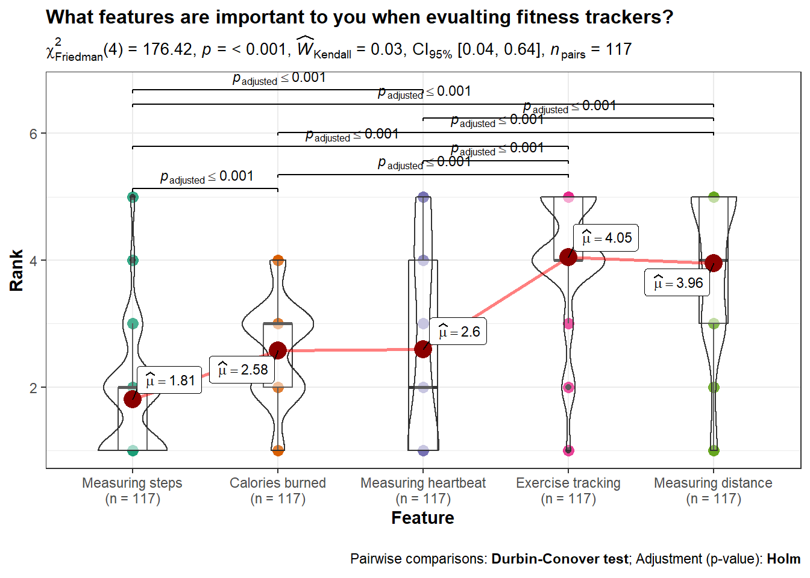
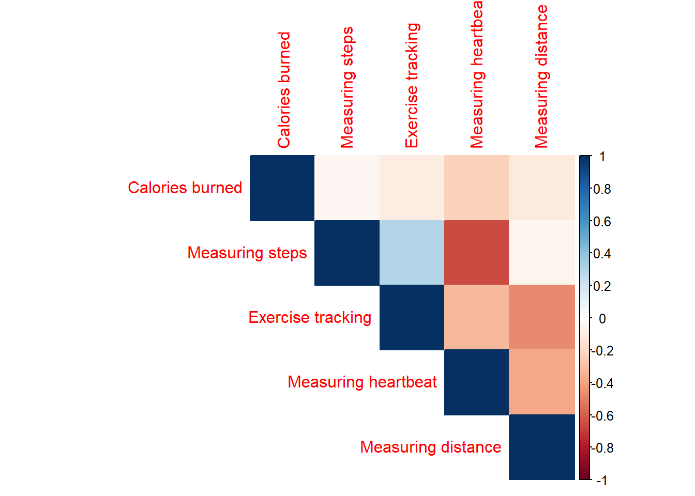
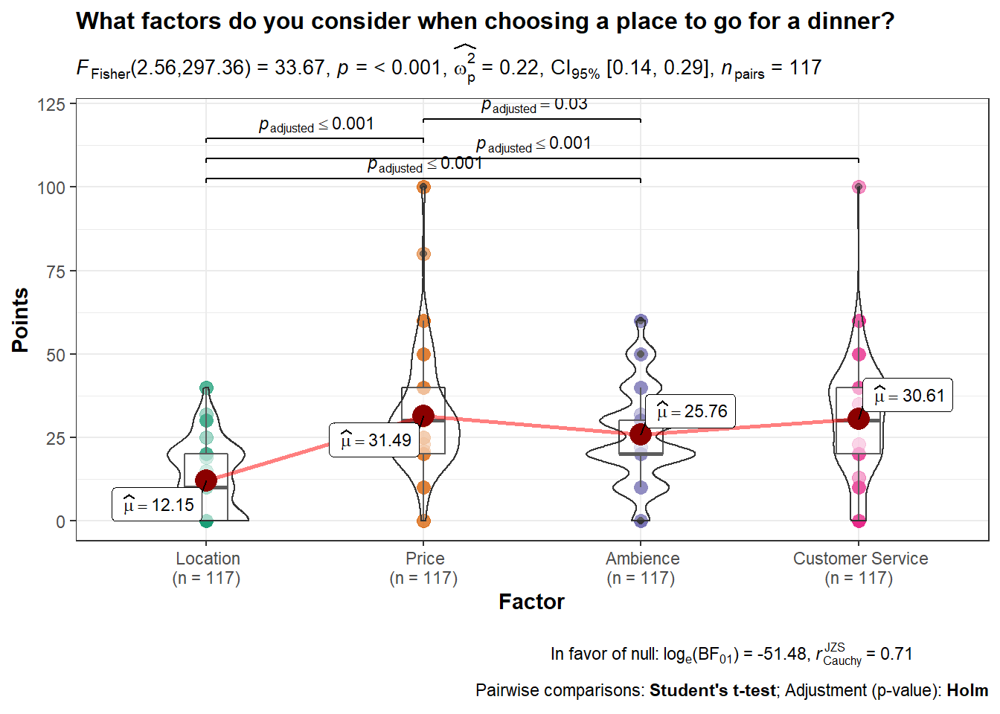
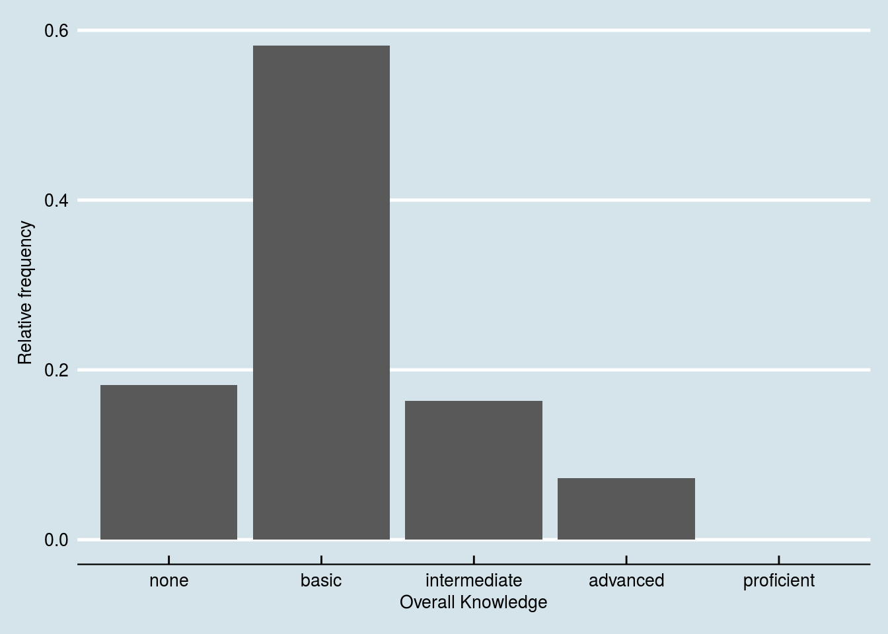
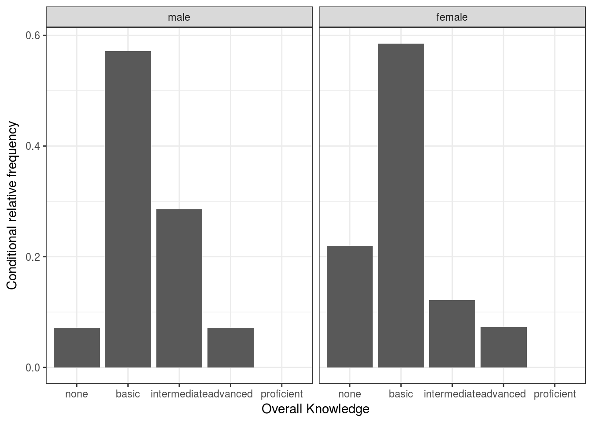

13 Questionnaire design
Welcome to the questionnaire design guide!
An aim of this course is to develop your ability to translate business problems into actionable research questions and to design an adequate research plan to answer these questions. Therefore, you need to be equiped with knowledge on how to create a survey and properly conduct a research.
Generally, what you can expect from the survey design is similar to what one experiences in a relationship. If you try to take more than you commit, it doesn’t work out. Now on a serious note, if you follow guidelines mentioned here, you will certainly avoid usual traps your fellow collegues were caught in.
In a research process, conducting a survey is a part of (primary) data collection. Before we collect data, we have to make sure that preceding steps are correctly done. However, in the following sections we will focus on the process of designing a questionnaire. Eventually, you will be able to collect relevant data and apply appropriate statistical tests.

13.1 Questionnaire design process
A structured questionnaire is a research instrument designed to elicit specific information from a sample of a target population. Usually it is used in a standardized way with fixed-alternative questions (same questions and response options for all respondents).
An objective of a questionnaire is threefold:
- to translate the information need into a set of specific questions that the respondent can and will answer,
- to motivate, and encourage respondents to become involved, to cooperate, and to complete the questionnaire,
- to minimize response error.
In order to meet these objectives, a questionnaire design process suggests the following sequence of steps:

13.1.1 Specification of the information needed
The questionnaire design should be aligned with the research design! In order to do make it aligned, it is necessary to review components of the problem and the approach. In particular, you should review the research questions, hypotheses and characteristics that influence the research design.
If you are interested in the causal effect of one particular (independent) variable on another (dependent) variable, think about an experimental design that might allow you to manipulate this variable. In this case, you particularly have to decide on the following:
- Which variable to manipulate?
- Whether to use a between-subjects or within-subjects design?
- The cause-effect sequence (the cause must occur before the effect)
- The number of experimental conditions
- Potential interactions and relationships with other variables (does the effect depend on another variable?)
What you need to be careful about is the effect of reversed causation. The effect refers to the situation where the causal relationship could possible have an opposite direction from what we assumed at the first place. For instance, it is often assumed that an increase in individual income leads to increase in well-being (happiness). However, some researches suggest that this causation could have an opposite direction, i.e. that actually increase in well-being of an individual leads to an increase in income.
Here are some examples of causal research design applications:
- To assess how a product’s country-of-origin impacts attractiveness across different countries.
- To analyse the effects of rebranding on customer loyalty.

If you would like to analyze the effects of multiple categorical or continuous (independent) variables on one continuous (dependent) variable, you might use a regression model. When doing this, you particularly have to decide on:
How to measure the dependent variable (DV). This is particularly important, since you need a variable that is powerful in uncovering variation between subjects (e.g., open-ended questions, such as “How much are you willing to pay for this product” are good candidates). Moreover, you also need to consider the nature of your DV,i.e. whether it is an interval variable, ordinal or categorical variable. The nature of your DV will heavily influence your choice of a correct statistical test.
How to measure the independent variables (IV) (single-item vs. multi-item scales, categorical vs. continuous). Bear in mind that the nature of the IV, together with DV, affects your choice of a statistical test as well.
What other variables might cause the effect that you would like to investigate (to prevent omitted variable bias, i.e. variables that are not part of your model but still influence the dependent variable).
Potential interactions (e.g., is the effect of variable X stronger for group A vs. B?)

13.1.2 Specify the interviewing method
In the next step you should review the type of interviewing method you will use.
At this point you need to think in which setting you aim to conduct your survery. For instance, should you do it in a face-to-face setting or rather online. Here you can find some advantages and disadvantages of online surveys:

Additionally, here is the list of the online tools you can use to conduct an online survey (usually for free):
13.1.3 Determine the content of questions
In this step you are starting to work on the content of you questions. There are several questions you should ask yourself when writing questions:
- Is the question necessary?
- Will I obtain the needed information?
- Are several questions needed instead of one?
- What type of data can I collect by asking that question (categorical or continuious)?
In your survey try to avoid asking double-barrelled questions.Those are a single question that attempts to cover two issues. Such questions can be confusing to respondents and result in ambiguous responses. Instead, you might ask multiple questions in order to obtain the inteded information.
Incorrect:
Do you think Nike Town offers better variety and prices than other Nike stores?
Correct:
Do you think Nike Town offers better variety than other Nike stores?
Do you think Nike Town offers better prices than other Nike stores?
13.1.4 Inability and unwillingness to answer
The quality of collected data you highly depends on your ability to address correct participants. Therefore, you need to make sure that your respondents are able to meaningfully answer your questions.
Examples:
- Not every household member might be informed about monthly expenses for groceries purchases if someone else makes these purchases.
- Use filter questions that measure familiarity and product use.
- Include a “don’t know” option.
- If you ask participants for monteray values (e.g. how much are you ready to pay for the XY product?) across several EU, make sure you indicate correct currency (e.g. HRK for Croatia or HUF for Hungary).
- Think about how mobile friendly is the layout of your survey (if it is an online survey).
- Good case practices suggest that there should not be more than 2 questions per page (for online surveys displayed on mobile phones).
If you are asking participants to recall certain brands for instance, make sure you use unaided recall question:
Example of unaided recall question:
What brands of soft drinks do you remember being advertised on TV last night?
Example of aided recall question:
Which of these brands were advertised last night on TV?
a) Coca-Cola
b) Pepsi
c) Red Bull
d) Evian
e) Don’t know
If you are asking participants to list something, the good case practice is to minimize the effort required by respondents:
Incorrect:
Please list all the departments from which you purchased merchandise on your most recent shopping trip to department store X.
Correct:
Please check all the departments from which you purchased merchandise on your most recent shopping trip to a department store:
a) Women’s dresses
b) Men’s apparel
c) Children’s apparel
d) Cosmetics
e) Jewelry
f) Other (please specify) ___________
In a case you are asking for information that could be considered sensitive (e.g. money, family life, political beliefs, religion), they should come at the end of the questionnaire. Moreover, it is recommendable to provide response categories rather than asking for specific figures:
Incorrect:
What is your household’s exact annual income?
Correct:
Which one of the following categories best describes your household’s annual gross income?
a) under 25.001 €
b) 25.001€ to 50.000 €
c) 50.001€ to 75.000 €
d) 75.001€ to 100.000 €
e) over 100.000 €
13.1.5 Decide on measurement scales and scaling techniques
Every statistical analysis requires that variables have a specific levels of measurement. Measurement scales you choose for your questions in a survey will affect the answers you get and eventually statistical test you can apply. For instance, it would not make sense to compute an average of genders. An average of a categorical variable does not make much sense. Moreover, if you tried to compute the average of genders defined in numeric values (e.g. male=0, female=1), the output would be interpretable.
Therefore, it is crucial to become familiar with possibilities of each scale before you choose to add another question to your survey. Consequently, chances to obtain data you did not intend to collect and chances that you will not be able to apply tests you intended are significantly lower.
In the following table you can get a quick overview of possibilities per each measurement scale. :

In the table below you can find general procedure for choosing a correct analysis based on the measurement scale of your data and number of variables. It shows statistical analyses we covered during the course and aims to help you choose among them based on the nature of dependent variables on the side, and the nature and the number of your independent variables on the other side:

When it comes to scaling techniques, they are meant to study the relationship between objects. The basic scaling techniques classification is on comparative and non-comparative scales.

The noncomparative scale each object is scaled independently of the other objects. The resulting data is supposed to be measured in an interval and ratio scaled.
Comparative scales (or nonmetric scaling) compare direclty the stimulus object. For example, the respondent might be asked directly about his preference between domestic and foreign beer brands. As a result, the comparative data collected can only be interpreted in relative terms. In the following sections we will walk through both types of comparative scales and briefly introduce them.
13.1.5.1 Comparative scale: Paired Comparison
- Respondent is presented with two objects and asked to select one according to some criterion.
- The nature of resulting data is ordinal
- Assumption of transitivity (if X > Y and Y > Z, then X > Z) enables the paired comparison data to be converted into a rank order. To do so, you need to indetify the number of times the object is preferred by adding up all the matrices.
- Effective when the number of objects is limited as it requires the direct comparison, and a bigger number of objects makes the comparison becomes unmanagable.
- Example:
For each pair, please indicate which of the two brands of beer in the pair you prefer.
13.1.5.2 Comparative scale: Rank Order
- Allow a certain set of brands or products to be simultaneously ranked based upon a specific attribute or characteristic.
- The rank order scaling is a good proxy for to the shopping setting as there are simultanious comparisons of objects.
- The rank order scaling results in the data of ordinal nature.
- Example:
Rank the various brands of beer in order of preference. Begin by picking out the one brand that you like most and assign it a number 1. Then find the second most preferred brand and assign it a number 2. Continue this procedure until you have ranked all the brands of beer in order of preference. No two brands should received the same rank number.

13.1.5.3 Comparative scale: Constant sum
- Respondents allocate a constant sum of units (e.g., points, dollars) among a set of stimulus objects with respect to some criterion.
- Constant sum is similar to rank order, but it carries specific units.
- The resulting data does not just indicate important factors, but also by how much a factor supersedes another one.
- Constant sum scaling can be used to observe the comparative significance respondents assigned to various factors of a subject.
- Example:
There are 8 attributes of bottled beers. Please allocate 100 points among the attributes so that your allocation reflects the relative importance you attach to each attribute.

- Basic analysis of constant-sum data involves tabulation of responses and presenting them as either quantities (e.g., “on average, 7 points were allocated to”high alcohol level“), or, as proportions (”On average, 7% of points were allocated to “high alcohol level”).
13.1.5.4 Non-Comparative Scales: Continuous Rating Scales
- Participants rate the objects by placing a mark at the appropriate position on a line that runs from one extreme of the criterion variable to the other.
- One of the advantages of the continuous rating scale is that it is easy to administer.

- Once the ratings are collected, you can splits up the obtained ratings into categories and then assign those depending on the category in which the ratings fall.
13.1.5.5 Non-Comparative Scales: Itemized Rating Scales
- The respondents are provided with a scale that has a number or brief description associated with each category.
- The categories are ordered in terms of scale position, and the respondents are required to select the specified category that best describes the object being rated.
- The commonly used itemized rating scales are the Likert, semantic differential and Stapel scales.
13.1.5.5.1 Itemized Rating Scales: Likert scale
- Requires respondents to indicate their attitude towards the given object through the degree of agreement or disagreement with each of a series of statements within typically five or seven categories.
- Reversed code of some items increases validity.
- One limitation is time required to answer a question on a Likert scale. Compared to other itemized scaling techniques, Likert scale is more time consuming as each respondent is required to read every statement given in a questionnaire before assigning a numerical value to it.

In the table below you can find a couple of commonly measured constructs in marketing research such as attitude, importance, purchase intention and similar.

13.1.5.5.2 Itemized Rating Scales: Semantic Differential
Typically, participants rate objects on a number of itemized, seven-point rating scales bounded at each end by one of two bipolar adjectives.
Semantic differential can measure respondent attitudes towards something (products,concepts, items, people…).
It helps you find the repondent’s position is on a scale between two bipolar adjectives such as “Sweet-Sour” or “Bright-Dark”. In comparison to Likert scale, which uses generic scales (e.g. extremely dissatisfied to extremely satisfied), semantic differential questions are posed within the context of evaluating attitudes.
Widely used rating scale in marketing research due to its versatility

When creating a semantical difference question, you should consider the following:
- Number of categories:

- Balanced vs. unbalanced:

- Odd/even number of categories:

- Forced vs. non-forced response

- Verbal description:

13.1.6 Questionnaire structure
The sequnece of questions in a questionnaire could play imporant role. For instance, more sensitive questions (such as demographic-related questions) are usually placed at the end as they can trigger change in respondent’s behavior.
If you plan to conduct an online survey, then you need to think about the respondent’s experience while doing your questionnaire. For instance, spread the content over more short pages and do not have fewer long pages. In online surveys, two questions on one page is a useful rule of thumb. Generally, respondents are reluctant to read and fill out long questionnaire pages. Hence, long pages will lead to a higher dropout rate. In order to reduce dropout rate state how long the survey will approximately take in the introduction of the questionnaire. Take into account that tools like Qualtrics provide the estimated response time in the survey overview.
Consider that the most of people usually use their phones to fill it out. Think about how the questionnaire will appear on a phone screen too. In that regard, think of length of questions especially.
In the end, the questionnaire structure has to be aligned with the research design. For example, if your research design features an experiment, this needs to be reflected in the questionnaire (e.g., you need to assign the respondents randomly to the experimental conditions in case of a between-subjects comparison).
13.1.6.1 Questionnaire structure for a between-subjects design
In a between-subject design you randomly assign each respondent to different experimental conditions. They would then complete tasks only in the condition to which they are assigned.
For instance, we would like to test the effect of two advertisements on purchase intention. Therefore, one group of (randomly assigned) respondents will be exposed to one advertisement version while the other group (of randomly assigned respondents) will be exposed to another version. After that, both groups of respondents should express their willingness to buy the advertised product. Evenutally, if the dependent variable (e.g. willingness to buy) is measured on interval or ratio scale, then you can use independent t-test to compare group means. The whole experimental design should be organised as following:

13.1.6.2 Questionnaire structure for a within-subjects design
This type of experimental design involves exposing each respondent to all of the user experimental conditions you’re testing. This way, each respondent will test all of the conditions.
For instance, we would like to test again the effect of two advertisements on purchase intentions, but this time in a within-subject design. First, each respondent will be exposed to the first version of advertisement and right after that asked to rate his/her willingness to buy the advertised product. Subsequently, each participant will be shown another version of advertisement and again rate his/her willingness to purchase the advertised product. Finally, we can compare group means with paired sample t-test (given that data is measured on interval or ratio scale).

13.1.7 Question wording
Generally, question wording should enable each respondent to understand questions and to be able to answer them with reliability. Reliability means that, if a respondent was asked the same question again, he/she would give the same answer again. A number of common problems regarding the question wording have been identified, so we will address the most important ones.
In order to ensure reliability, the issue in terms of who, what, when and where should be defined in each question.
Example: Which brand of shampoo do you use?
Who (the respondent): It is not clear whether this question relates to the individual respondent or the respondent’s total household.
What (the brand of shampoo): It is unclear how the respondent is to answer this question if more than one brand is used.
When (unclear): The time frame is not specified in this question. The respondent could interpret it as meaning the shampoo used this morning, this week, or over the past year.
Where (not specified): At home, at the gym? Where?
A more clearly defined question is:
Which brand or brands of shampoo have you personally used at home during the last month? In the case of more than one brand, please list all the brands that apply.
Use ordinary words. Words should match the vocabulary level of the participants.
Incorrect:
“Do you think the distribution of soft drinks is adequate?”
Correct:
“Do you think soft drinks are easily available when you want to buy them?”
Avoid double negative form. Double negative question forms can confuse respondents, especially when they need to answer with “Agree” or “Disagree”.
Incorrect:
Do you think that it is not uncommon that boys play basketball?
Correct:
In your opinion, is it common that boys play basketball?
Avoid leading questions.Leading questions clue the participant to what the answer should be. Such questions introduce a bias in a particular direction.
Incorrect:
“Is Colgate your favorite toothpaste?”
Correct:
“What is your favorite brand of toothpaste?”
Avoid ambiguous words. Words such as usually, normally, frequently, often, regularly, and other similar words, do not define frequency clearly enough.
Incorrect:
“In a typically month, how often do you go to a movie theater to see a movie?”
a) Never
b) Occasionally
c) Sometimes
d) Often
e) Regularly
Correct:
“In a typically month, how often do you go to a movie theater to see a movie?”
a) Less than once
b) 1 or 2 times
c) 3 or 4 times
d) More than 4 times
13.1.8 Choose adequate order
One of the last steps in a process of designing a questionnaire is choosing adequate order of questions and instructions for respondents.
At the begining, you should provide a short and easy-to-understand introduction to the topic. Use simple language and avoid technical terms (e.g., not many people will know the terms “manufacturer brand” and “store brand”). Additionally, in the introduction you should state how long the survey will approximately take.
The opening questions should be interesting, simple and non-threatening. They are crucial because it is the respondent’s first exposure to the questionnaire and is likely to set the tone for the rest of questions in the questionnaire. If too difficult to understand, or sensitive in some way, respondents are likely to stop answering your questions. Qualifying questions (or screening questions) should serve as the opening questions (if applicable). Their purpose is to identify a potential respondent that is eligable to proceed with the research survey.
After the opening part, you should establish an optimal question flow. General questions should precede the specific questions. Questions on one subject, or one particular aspect of a subject, should be grouped together. It may feel confusing to be asked to return to some subject they thought they already gave their opinions about.
As respondents are moving towards the end of the questionnaire, they are likely to become increasingly indifferent and might give careless answers. Therefore, questions of special importance should ideally be included in the earlier part of the questionnaire.
Finally, you should pay particular attention to provide all prescribed definitions and explanations before you ask a question. This ensures that the questions are undestood in consistent way by every respondent.
13.1.9 Test your questionnaire
Finally, before you distribute the final questionnaire, there are some things to consider. First, you should always pretest your questionnaire before sharing it! Test all aspects of the questionnaire (content, wording, sequence, form & layout, etc.). If possible, use respondents in the pretest that are similar to those who will be included in the actual survey. Ideally, the pretest sample size should be small (in a real scenario this could varyfrom 15 to 30 respondents; for the group project, a lower number will be sufficient). After each significant revision of the questionnaire, conduct another pretest, using a different sample of respondents. Eventually, code and analyze the responses obtained from the pretest so that you make sure that you collected information you intended to collect.
After testing your questionnaire you should be able to determine whether:
- The questions are properly framed
- The questions wording triggers any biases
- The questions are placed in the optimal order
- The questions are understandable
- Specifying questions are needed or some need to be eliminated
13.2 Questionnaire in Qualtrics
A questionnaire creation in Qualtrics starts with creation of a Qulatrics project. Each project consists of a survey, distribution record, and collection of responses and reports. There are three ways to create a questionnaire.First, you can create a new survey project from scratch. Second, you can create a new questionnaire from a copy of an existing questionnaire. Eventually, you can create from a template in your Survey Library, or from an exported QSF file.
In order to create a completely new questionnaire, you need to do the following:
Go to the Projects page by clicking the Qualtric XM logo or clicking Projects on the top-right.

Create new project by clicking the blue button on the right side.
In the “Create your own” section click on the survey button.

Enter a name for your survey and get started with a survey creation.

If you would like to create a new questionnaire on a basis of an already existing one, then you choose “From a Copy”. Subseqeuntly, you need to indicate the questionnaire you would like to copy. Now you are good to go!

If there is a questionnaire in the Qualtrics Library you would like to use, then you need to choose “From Library”, and indicate one library name in the dropdown menu.

13.3 Question types and data analysis
## [1] 117 54## [1] 2 2 2 2 2 1 2 1 1 1 2 1 2 1 1 1 2 2 2 2 2 1 1 1 1 2 1 2 1 1 1 2 2 1 2 2 2
## [38] 2 2 2 1 2 1 2 1 1 1 1 2 2 2 1 2 2 2 2 1 2 1 2 2 2 1 1 2 2 2 1 2 2 2 1 2 1
## [75] 2 1 1 2 2 1 1 2 2 2 1 2 1 1 2 2 2 1 2 2 2 1 2 1 1 2 1 2 1 2 2 1 2 2 1 2 1
## [112] 1 2 2 2 1 2
## attr(,"label")
## Q23_Gender
## " Selected Choice"## [1] 2 2 1 1 1 1 2 2 2 2 2 2 2 1 2 2 1 2 2 2 2 2 2 1 1 1 2 2 2 2 1 2 2 1 2 2 1
## [38] 2 2 1 2 1 2 2 1 2 2 1 2 2 2 2 2 1 2 2 2 2 1 2 2 1 2 2 2 1 2 2 1 2 2 2 1 2
## [75] 2 1 2 2 1 2 2 1 2 1 1 2 2 2 2 2 2 1 2 1 1 1 2 2 2 2 2 2 2 2 2 2 1 1 1 2 1
## [112] 2 2 2 2 2 2
## attr(,"label")
## Q7_MC_sa_country
## " Selected Choice"In this chapter we will encounter the nature of data you collect when conducting a survey. It will help you choose a type of a question depending on the nature of data you want to collect and on the type of statistical tests you want to apply.
13.3.1 Multiple choice with a single answer
Multiple Choice with a single answer is a type of closed-ended question that lets respondents select one answer from a defined list of choices.

Type of data you obtain is categorical, and the output comes in the following form:
| In a typical week, how many hours do you spend watching movies or TV series on Netflix? |
|---|
| 3 |
| 4 |
| 5 |
| 4 |
| 5 |
| 2 |
13.3.1.1 Data handling
What to do with this data now? First, we need to load it in R and prepare for analysis. The numbers you see in the output R recognizes as numeric. In order to conduct statistical modelling and properly visualize our results, we need to convert our data to a factor class.
A factor (or coding variable) represents different groups of data by using numbers (integers). In fact, factors appear as numeric variables, but they hold meaning of labels/names of data groups, i.e. nominal variable. These data groups are represented in a form of ‘levels’.
In our case, our multiple choice question output will contain 4 data groups (‘Grocery Store’, ‘Online shop’, ‘Specialised coffee shop’, ‘other’) after converting it to factor:
# Convert numeric value to factors
qualtrics$'In a typical week, how many hours do you spend watching movies or TV series on Netflix?' <- factor(qualtrics$'In a typical week, how many hours do you spend watching movies or TV series on Netflix?', levels = c(1:5), labels = c('Never','1-2 hours','3-4 hours','5-6 hours','more than 6 hours'))
qualtrics$` Selected Choice_1` <- factor(qualtrics$` Selected Choice_1`,levels = c(1:2),labels = c("Male","Female"))
qualtrics$` Selected Choice` <- factor(qualtrics$` Selected Choice`, levels = c(1:2), labels=c("Austria","Germany"))
# Table
table(qualtrics$'In a typical week, how many hours do you spend watching movies or TV series on Netflix?')##
## Never 1-2 hours 3-4 hours 5-6 hours
## 19 18 22 35
## more than 6 hours
## 23##
## Austria Germany
## 35 82##
## Male Female
## 49 6813.3.1.2 Visualisation
Second, you might want to visualize your results. In order to do so, the data format needs to be in the appropriate format.Here we proceed with data fromat adaptation from the point where we stopped:
# Converting long format to the visualisation-friendly format
mlc_visualisation <- as.data.frame(table(qualtrics$'In a typical week, how many hours do you spend watching movies or TV series on Netflix?'))
# Naming columns
names(mlc_visualisation) <- c('Time','Count')
# Observing
mlc_visualisationThe simpliest way to visualize data obtained from multiple choice question with a single answer is a bar chart:
## Basic bar chart
labels <- as.character(mlc_visualisation$Time) #Save labels for x-axis in the barplot
barplot(mlc_visualisation$Count, # Column to visualize
xlab='Time', # X-axis label
ylab = 'Count(answers)', # Y-axis label
names.arg = labels,
main = 'How many hours do you spend watching movies or series on Netflix?') # Title
R package ggplot2 allows you to create visually appealing graphs:
## ggplot2 bar chart
library(ggplot2)
p <- ggplot(data=mlc_visualisation,
aes(x=Time, y=Count, fill=Time)) +
geom_bar(stat='identity') + theme_minimal() + labs(title = "In a typical week, how many hours do you spend watching movies or series on Netflix?")
p
Another R library which can help you make amazing interactive charts in a minute is plotly. Here we use a function called ggplotly(), which allows you to turn any ggplot2 chart interactive. Since we have already created a bar chart using ggplot2 and saved it as “p”, we will just turn it into plotly graph:
An improved version of ggplot2 package is the packaged called ggvis, which is still in developing:
13.3.1.3 Statistical analysis
Data type collected from the previous question is ordinal as we are able to make a natural order of the levels. Since it is ordinal data type, it belongs to categorical data. For the analysis of categorical data we can use Chi-square test or Fisher’s test if a count for some level is less than 5.
13.3.1.3.1 Fischer’s exact
Fisher’s exact test is used to test a hypothesis with data obtained from multiple choice questions with single answer. Results from multiple choice questions with multiple answers are treated with different test.- Application: when you have 1 dependent variable and 1 independent variable with 2 or more levels/factors
- Used when frequency in at least one cell is less than 5 . When frequencies in each cell are greater than 5, Chi-square test should be used.
- Hypothesis: Is there a significant difference in frequencies between values observed in cells and values expected in cells ? (R for Marketing and Research Analytics)
- H0: There is no relationship between the two categorical variables.Therefore, two categorical variables are independent. Knowing the value of one variable does not help to predict the value of the other variable.
- H1: There is a relationship between the two categorical variables.Therefore, two categorical variables are dependent.Knowing the value of one variable helps to predict the value of the other variable.
- Usually, this type of test is used on 2x2 contingency tables. However, it can be applicable on contingency tables of larger dimensions.
Example: We would like to know whether a number of hours spent watching Netflix depends on the respondents’ country of origin.
# Creation of contingency table
fisher_test_table <-table(qualtrics$` Selected Choice`,qualtrics$'In a typical week, how many hours do you spend watching movies or TV series on Netflix?')
# Check how our contigency table looks like
fisher_test_table##
## Never 1-2 hours 3-4 hours 5-6 hours more than 6 hours
## Austria 3 7 6 11 8
## Germany 16 11 16 24 15# Since we have a count less than 5, we should apply Fisher's test instead of Chi-square.
# Fisher's test
test <- fisher.test(fisher_test_table)
test##
## Fisher's Exact Test for Count Data
##
## data: fisher_test_table
## p-value = 0.575
## alternative hypothesis: two.sided## [1] 0.5750401From the output and from test$p.value we see that the p-value is higher than the significance level of 5%. Like any other statistical test, if the p-value is higher than the significance level, we can not reject the null hypothesis.
In our case, not rejecting the null hypothesis for the Fisher’s exact test of independence means that there is no significant relationship between the two categorical variables. Therefore, knowing the value of one variable does not help to predict the value of the other variable.
13.3.1.3.2 Chi-square test: Goodness of fit & Independence test
- Goodness of fit
- Application: when you only have 1 dependent variable and none independent variables
- Hypothesis: Is there a significant difference in frequencies between values observed in cells and values expected in cells ? (R for Marketing and Research Analytics)
- H0: There is no significant difference between the observed and the expected frequencies.
- H1: There is a significant difference between the observed and the expected frequencies.
- If we don’t specify expected frequency per cell (see in the code below), then it is expected that all cells show an eqaul frequency.
- Example :‘Do the numbers of respondents who are spending different amount of hours watching Netflix significantly differ from each other?’
-
Note that we did not assume any specific distribution, so we are assuming that each count will have the same or similar number.
# Creating table
(mlc_chi_square <- table(qualtrics$'In a typical week, how many hours do you spend watching movies or TV series on Netflix?'))##
## Never 1-2 hours 3-4 hours 5-6 hours
## 19 18 22 35
## more than 6 hours
## 23##
## Chi-squared test for given probabilities
##
## data: mlc_chi_square
## X-squared = 7.9145, df = 4, p-value = 0.09476The p-value of the test is higher than 0.05. We can conclude that the numbers of respondents who spent different amount of hours watching Netflix are commonly distributed. Observed distribution does not differ significantly from the expected. This result does not surprise if you take a look at the values for each level in the table we created before conducting the test. There you can see that count of answers in each level is more or less not deviating too much. It is visible if you take a look at the previous visualisations as well.
If we are interested in testing more specific distribution, i.e. expect that 40% of our respondents are watching Netflix 3-4 hours, we can introduce corresponding distribution in the test.
# Expected values in percentages for each alternative. The sum must be 1.
expected_values <- c(0.10, # We expect that 10% of our respondents do not watch Netflix at all ("Never").
0.20, # We expect that 20% of our respondents watch Netflix 1-2 hours a week.
0.40, # We expect that 40% of our respondents watch Netflix 3-4 hours a week.
0.20, # We expect that 20% of our respondents watch Netflix 5-6 hours a week.
0.10 # We expect that 10% of our respondents watch Netflix more than 6 hours a week.
)
# Chi-square test with expected values
chisq.test(mlc_chi_square, p=expected_values)##
## Chi-squared test for given probabilities
##
## data: mlc_chi_square
## X-squared = 35.607, df = 4, p-value = 3.486e-07This time the p-value of the test is lower than 0.05.We have an evidance that observed distribution does significantly differ from the expected distribution (10%/20%/40%/20%/10%).
- Chi-Square Test of Independence
- Application: when you have 1 dependent variable and 1 independent variable with 2 or more levels/factors
- Hypothesis: Is there an association between categorical variable X and categorical variable Y?
- H0: There is no association between the two variables.
- H1: There is an association between the two variables.
- Example: Is there an association between gender and the hours spent watching Neflix during a week?
# Creation of contingency table
chi_square_table <-table(qualtrics$` Selected Choice_1`,qualtrics$'In a typical week, how many hours do you spend watching movies or TV series on Netflix?')
# Chi-square independence test
chisq.test(chi_square_table)##
## Pearson's Chi-squared test
##
## data: chi_square_table
## X-squared = 1.5739, df = 4, p-value = 0.8135Since the p-value (0.8135) is higher than the significance level (0.05), we cannot reject the null hypothesis. Thus, we conclude that there is no association relationship between gender and number of hours spent watching Netflix. Therefore, we can say that the hours spent is independent from the gender of participant.
13.3.2 Multiple choice with multiple answers

Before we conduct any test, we will do some simple calculatios and visualise our data.
# Rename columns
colnames(qualtrics)[38] <- "ja!Naturlich"
colnames(qualtrics)[39] <- "Clever"
colnames(qualtrics)[40] <- "Spar Vital"
colnames(qualtrics)[41] <- "..."
# Replacing NA with 0
qualtrics$`ja!Naturlich`[is.na(qualtrics$`ja!Naturlich`)]=0
qualtrics$Clever[is.na(qualtrics$Clever)]=0
qualtrics$`Spar Vital`[is.na(qualtrics$`Spar Vital`)]=0
qualtrics$...[is.na(qualtrics$...)]=0
# Calculating frequency, percentage of respondents and percentage of cases
df.cochran <- data.frame(Frequnecy = colSums(qualtrics[38:41]),
Share_of_respondents = (colSums(qualtrics[38:41])/sum(qualtrics[38:41]))*100,
Share_of_cases =((colSums(qualtrics[38:41]))/nrow(qualtrics[38:41]))*100)
# Observing
df.cochran# Visualisation
barplot(df.cochran[,3], names.arg = row.names(df.cochran), main = "% of Respondents familiar with brands", xlab = "Brand",ylab = "Percentage")
The visualisation above depicts the fact that more than 60% percent of people are familiar with the brand “ja!Naturlich”, while we can not say the same for other brands considered in our question.
For the analysis of results collected with multiple choice question with multiple possible answers, we can use Cochran’s Q test.Although we did not mention it before, it is not too different from what you have already learned about other tests.
The Cochran’s Q test and associated multiple comparisons require the following assumptions: 1. Responses are dichotomous and from k number of matched samples. 2. The subjects are independent of one another and were selected at random from a larger population. 3. The sample size is sufficiently “large”. (As a rule of thumb, the number of subjects for which the responses are not all 0’s or 1’s, n, should be ≥ 4 and nk should be ≥ 24)
In a within-subjects experiment design with three or more observations of a dichotomous(= just two levels such as “Yes” or “No”) categorical outcome, you utilize Cochran’s Q test to assess main effects.Similarly, in our multiple choice question with multiple answers we have the same respondent going through three or more potential answers with dichotomous(=yes or no) categorical outcome.
library(nonpar)
# Creation of matrix
matrix.cochran <- cbind(qualtrics$`ja!Naturlich`,
qualtrics$Clever,
qualtrics$`Spar Vital`,
qualtrics$...)
# Turning NAs to 0
matrix.cochran[is.na(matrix.cochran)]=0
# Cochran test
cochrans.q(matrix.cochran, alpha = 0.05)##
## Cochran's Q Test
##
## H0: There is no difference in the effectiveness of treatments.
## HA: There is a difference in the effectiveness of treatments.
##
## Q = 25.5681818181818
##
## Degrees of Freedom = 3
##
## Significance Level = 0.05
## The p-value is 1.17439848891232e-05
## There is enough evidence to conclude that the effectiveness of at least two treatments differ.
## The p-value less than 0.05 indicates that there is enough evidence to conclude that some of the store brands are better known among our respondents than other. In order to take a closer look at it, we need to conduct a post hoc test.
library(DescTools)
list.cochran <- list(qualtrics$`ja!Naturlich`,
qualtrics$Clever,
qualtrics$`Spar Vital`,
qualtrics$...)
# Replacing NAs in the list with 0 in order to be able to run the test
list.cochran <- rapply(list.cochran, f=function(x) ifelse(is.na(x),0,x), how="replace" )
# Post hoc test (Dunn Test)
DunnTest(list.cochran, method="bonferroni")##
## Dunn's test of multiple comparisons using rank sums : bonferroni
##
## mean.rank.diff pval
## 2-1 -36 0.1093
## 3-1 -18 1.0000
## 4-1 -74 7.3e-06 ***
## 3-2 18 1.0000
## 4-2 -38 0.0761 .
## 4-3 -56 0.0014 **
## ---
## Signif. codes: 0 '***' 0.001 '**' 0.01 '*' 0.05 '.' 0.1 ' ' 1From the results of the Dunn Test, we can see that there is a big difference between 1 (“ja!Natürlich”) and 4(“…”), as well as between 4(“…”) and 3(“Spar Vital”).
13.3.3 Rank order question

A rank order question asks respondents to compare items to each other by placing them in order of preference. Note that the data obtained from a rank order question shows an order of a respondent’s pereference, but not the difference between items. For instance, if the the most important feature of a fitness tracker for a respondendt XY is “Measuring steps” and the second most important feature “Calories burned”, we don’t know for how much more important is the former one in comparison to the latter one.
Intuitive question to ask is the following: which feature of the fitness tracker is the most important for our respondents?
We can answer this question by calculating a mean rank for each feature. Before we do so, we will create a separate data frame and add columns of the response data.
rank.data <- data.frame(qualtrics$` Measuring steps`,
qualtrics$` Calories burned`,
qualtrics$` Measuring heartbeat`,
qualtrics$` Exercise tracking`,
qualtrics$` Measuring distance`)
colnames(rank.data)<-c("Measuring steps","Calories burned","Measuring heartbeat","Exercise tracking","Measuring distance")First information we would like to know is how many preference combinations there are, and how repetitive they are. We can obtain that information by creating a summary of the ranking data frame we created.
## n
## [1,] 2 1 3 4 5 10
## [2,] 1 3 2 4 5 19
## [3,] 2 3 1 4 5 17
## [4,] 1 2 4 3 5 4
## [5,] 4 2 1 3 5 3
## [6,] 3 2 1 5 4 15
## [7,] 1 3 5 2 4 10
## [8,] 1 2 4 5 3 10
## [9,] 2 4 1 5 3 9
## [10,] 1 2 5 4 3 9
## [11,] 5 4 3 1 2 3
## [12,] 2 3 4 5 1 8The matrix we received as an output is the summary of our ranking data. It shows that, for instance, the preference combination “2,1,3,4,5” repeats 10 times in the data frame. More specifically, it means that there are 10 respondents who prefer the item 2(“Calories burned”) the most, then the item 1(“Measuring steps”), and so on.
Now we can calculate the mean rank for each feature and conclude which feature is the most important to our respondents:
## [1] 1.811966 2.581197 2.598291 4.051282 3.957265As we can observe from the output, the item 1(“Measuring steps”) shows the best mean rank among all items. Therefore, we can assume that the “Measuring steps” is most important for our respondents. However, in order to statistically prove it and become sure that this is not just by mere chance, we can conduct Friedman rank sum test.
Friedman rank sum test is used to identify whether there are any statistically significant differences between the distributions of 3 or more paired groups. It is used when the normality assumptions for using one-way repeated measures ANOVA are not met. Another case when Friedman rank rum test is used is when the dependent variable is measured on an ordinal scale, as in our case.
Before we conduct the Friedman rank sum test, we will visualise our data:
# Preparing data frame for Friedman rank sum test
library(reshape2)
library(ggpubr)
library(rstatix)
library(ggstatsplot)
rank.data.long <- melt(rank.data,value.name = "Rank",variable.name = "Feature")
# We have just turned our data frame from the wide format to the long format by using function melt(). If we take a look at head and tail of our new data frame, we can see that it contains just two columns, "Rank" and "Feature".
tail(rank.data.long)# Quick visualisation
p <- ggboxplot(rank.data.long, x = "Feature", y = "Rank", add = "jitter",title = "What features are important to you when evualting fitness trackers?")
ggplotly(p)# Advanced visualisation
ggstatsplot::ggwithinstats(
data = rank.data.long,
x = Feature,
y = Rank,
type = "np",
pairwise.comparisons = TRUE, # show pairwise comparison test results
title = "What features are important to you when evualting fitness trackers?")
Already from the advanced visualisation, that includes Friedman rank sum test and pairwise comparison, we can have an insight in significance of differences among features.
##
## Friedman rank sum test
##
## data: as.matrix(rank.data)
## Friedman chi-squared = 176.42, df = 4, p-value < 2.2e-16Friedman rank sum test has a p-value lower than 0.05, so we can conclude that here are significant differences between at least two features (what we have already seen in our visualisation). Even though we have identified differences between preferences towards features in our advanced visualisation, we will conduct a post hoc test in order to demonstrate traditional way of calculating pairwise comparisons.
The output table provides us with p-values referring to significance of difference in mean ranks of each pair. For instance, the first 4 rows proves that the differences between the mean rank of the feature “Measuring steps” and each of the rest of features are significant. Consequently, we can conclude that this feature is by far the most important among our respondents.
Another question that may be interesting to explore is whether there are any complementary feautres ? Or features which overlap each other in its funcionality? In order to have a look at that, we can investigate the correlation between ranks assigned to each feature.
## Measuring steps Calories burned Measuring heartbeat
## Measuring steps 1.00000000 -0.04651331 -0.6569094
## Calories burned -0.04651331 1.00000000 -0.2221626
## Measuring heartbeat -0.65690943 -0.22216264 1.0000000
## Exercise tracking 0.29633223 -0.10838758 -0.3255840
## Measuring distance -0.05958032 -0.11694481 -0.3817895
## Exercise tracking Measuring distance
## Measuring steps 0.2963322 -0.05958032
## Calories burned -0.1083876 -0.11694481
## Measuring heartbeat -0.3255840 -0.38178948
## Exercise tracking 1.0000000 -0.47176821
## Measuring distance -0.4717682 1.00000000At the first glance we can observe a lot of negative values, meaning that many features correlate negatively relative to each other. In order to make the interpretation easier, we will try to visualise correlations in a form of a correlation matrix.

From the correlation matrix we can confirm that almost all features negatively correlate to each other. An exception is the relationship between feature “Measuring steps” and “Exercise tracking”, which correlates positvely. This matrix can be useful for digging deeper in relationship between preferences for features. For instance, we can assume that feature “Measuring steps” and “Exercise tracking” correlate positively because users see them as complementary features. Moreover, if we say that walking is a type of exercise (in case of longer walking routes), we can assume that users, who ranked “Exercise tracking” high, ranked “Measuring steps” high as well, because they perceive it as another type of “Exercise tracking”.
13.3.4 Constant Sum question

If you wish to obtain information about how much one attribute is preferred over another one, you may use a constant sum scale. The total box should always be displayed at the bottom to make it easier for respondents.A constant sum question permits collection of ratio data type. With data obtained we would be able to express the relative importance of the options.
| Location | Price | Ambience | Customer Service | id |
|---|---|---|---|---|
| 32 | 23 | 32 | 13 | 1 |
| 25 | 30 | 22 | 23 | 2 |
| 19 | 21 | 30 | 30 | 3 |
| 20 | 20 | 20 | 40 | 4 |
| 30 | 30 | 10 | 30 | 5 |
| 0 | 20 | 20 | 60 | 6 |
13.3.4.1 Data visualisation
# Creation of the long version of data frame
constant.sum.long <-melt(constant.sum, variable.name ="Factor" ,value.name = "Points")
constant.sum.long# Boxplot basic
constant.sum[,-5] %>%
boxplot(constant.sum.long$Points ~ constant.sum.long$Factor , col=rgb(0.3,0.5,0.4,0.6) , ylab="Points",xlab="", main= "What factors do you consider when choosing a place to go for a dinner?")
# Boxplot ggplot2
p<-constant.sum.long %>%
filter(Factor!="id") %>%
ggplot(aes(x=Factor, y=Points, fill= Factor)) +
geom_boxplot() +
theme_minimal() +
ggtitle("What factors do you consider when choosing a place to go for a dinner?") +
xlab("")
ggplotly(p)With the data collected we are able to answer the question: what factor is the most important for our respondents when they go out for a dinner?
In order to anwser this question we need to conduct a repeated measures ANOVA. This type of ANOVA is used for analyzing data where the same subjects are measured more than once. In our case we have every respondent measured on each of the factors (locations, price, ambience and customer service). Repeated measures ANOVA is an extension of the paired-samples t-test. This test is also referred to as a within-subjects ANOVA. In the within-subject experimental design the same individuals are measured on the same outcome variable under different time points or conditions.
We need to check all assumptions that need to be fulfilled in order to deploy this type of ANOVA. There are three assumputions that need to check. The first to check that each level of the independent variable is approximately normally distributed. Since we have more than 30 observations at each level, we do not need to proceed further due to the central limit theorem. Second assumption referrs to extreme outliers. Let’s have a look at potential outliers:
As we cannot identify any extreme outliers, we can proceed with deploying repeated measures ANOVA.
# Formatting data
constant.sum.aov <- gather(constant.sum, key = "Factor", value = "Points", ` Location`,` Price`,` Ambience`,` Customer Service`)
# One-way repeated measures ANOVA
res.aov <- anova_test(data = constant.sum.aov, dv = Points,wid = id ,within = Factor)
get_anova_table(res.aov)# Post hoc test
pairwise.t.test(constant.sum.long$Points,constant.sum.long$Factor, paired = T, p.adjust.method = "holm")##
## Pairwise comparisons using paired t tests
##
## data: constant.sum.long$Points and constant.sum.long$Factor
##
## Location Price Ambience Customer Service
## Price 3.7e-15 - - -
## Ambience 3.2e-10 0.030 - -
## Customer Service < 2e-16 0.742 0.079 -
## id < 2e-16 1.2e-11 3.1e-16 3.0e-12
##
## P value adjustment method: holmggstatsplot::ggwithinstats(
data = constant.sum.long %>% filter(Factor!="id"), # excluding "id" column from the data
x = Factor,
y = Points,
type = "p",
pairwise.comparisons = TRUE, # show pairwise comparison test results
title = "What factors do you consider when choosing a place to go for a dinner?")
13.3.5 Text or number entry question
A text or number entry question is a recommended type of question if you are interested in obtaining ratio data type. We will use this type of question together with a constant sum question type to collect data that can be analysed with regression analysis. Note that in this case we treat constant sum data as ratio data and therefore assume that 0 means complete absence.
Here is a glimpse in answers on how important is each factor to our respondents when it comes to dinning outside:
| Location | Price | Ambience | Customer Service |
|---|---|---|---|
| 32 | 23 | 32 | 1 |
| 25 | 30 | 22 | 43 |
| 19 | 21 | 30 | 34 |
| 20 | 20 | 20 | 46 |
| 30 | 30 | 10 | 17 |
| 0 | 20 | 20 | 4 |
We asked our respondents how much are they willing to spend on dinner on average:
| x |
|---|
| 29 |
| 77 |
| 52 |
| 31 |
| 22 |
| 35 |
In order to handle data easier, we will create a new data frame:
dinner <- subset(qualtrics, select = c(" Location"," Price"," Ambience"," Customer Service", " Willingness-to-pay (in EUR)"))
knitr::kable(head(dinner))| Location | Price | Ambience | Customer Service | Willingness-to-pay (in EUR) |
|---|---|---|---|---|
| 32 | 23 | 32 | 1 | 29 |
| 25 | 30 | 22 | 43 | 77 |
| 19 | 21 | 30 | 34 | 52 |
| 20 | 20 | 20 | 46 | 31 |
| 30 | 30 | 10 | 17 | 22 |
| 0 | 20 | 20 | 4 | 35 |
Before we conduct a linear regression analysis, we need to take a look at correlation matrix:
## Location Price Ambience
## Location 1.0000000 -0.31732620 -0.36134355
## Price -0.3173262 1.00000000 -0.21962027
## Ambience -0.3613436 -0.21962027 1.00000000
## Customer Service -0.1668810 0.08894752 -0.02405881
## Willingness-to-pay (in EUR) 0.1414540 -0.07438388 -0.32550607
## Customer Service Willingness-to-pay (in EUR)
## Location -0.16688104 0.14145397
## Price 0.08894752 -0.07438388
## Ambience -0.02405881 -0.32550607
## Customer Service 1.00000000 0.12125571
## Willingness-to-pay (in EUR) 0.12125571 1.00000000From our data we see, for instance, that some negative correlation between willingness to pay and importance of ambience as well as some positive correlation between importance of customer service and wilingness-to-pay. Let us observe descriptive statistics as well:
We see that difference between mean and median does not suggest (at the first sight) great effect of outliers. Let us now do linear regression analysis:
mlr.dinner <- lm(` Willingness-to-pay (in EUR)` ~ ` Location` + ` Price` + ` Ambience`+` Customer Service`, data = dinner)
summary(mlr.dinner)##
## Call:
## lm(formula = ` Willingness-to-pay (in EUR)` ~ ` Location` + ` Price` +
## ` Ambience` + ` Customer Service`, data = dinner)
##
## Residuals:
## Min 1Q Median 3Q Max
## -40.810 -18.205 -3.314 14.059 74.274
##
## Coefficients:
## Estimate Std. Error t value Pr(>|t|)
## (Intercept) 55.31553 11.57393 4.779 5.38e-06 ***
## ` Location` -0.06739 0.25556 -0.264 0.792503
## ` Price` -0.28455 0.16117 -1.765 0.080205 .
## ` Ambience` -0.69755 0.19088 -3.654 0.000394 ***
## ` Customer Service` 0.10988 0.07931 1.386 0.168646
## ---
## Signif. codes: 0 '***' 0.001 '**' 0.01 '*' 0.05 '.' 0.1 ' ' 1
##
## Residual standard error: 24.72 on 112 degrees of freedom
## Multiple R-squared: 0.1449, Adjusted R-squared: 0.1144
## F-statistic: 4.745 on 4 and 112 DF, p-value: 0.001421## [1] -0.697554Out of all factors of importance when dinning out, the only one that suggests significance at 0.05 level of significance is ambience. From the summary we can conclude that increase in importance of ambience by 1 point, leads to decrease in willingness to pay by -0.697554.
## 2.5 % 97.5 %
## (Intercept) 32.38327198 78.24779707
## ` Location` -0.57374787 0.43897062
## ` Price` -0.60389395 0.03479312
## ` Ambience` -1.07575993 -0.31934814
## ` Customer Service` -0.04725424 0.26701295From confidence intervals, We can conclude that when we do not consider any of given factors (location, price, ambience and customer service), willingness to pay will be somewhere between 32.383272EUR and 78.2477971EUR. Besides that, for each increase in importance of dinner ambience by one point, there will be an average decrease of willingness to pay between -1.0757599 and -0.3193481.

## $coefficients
## (Intercept) ` Location` ` Price` ` Ambience`
## 55.31553453 -0.06738863 -0.28455041 -0.69755404
## ` Customer Service`
## 0.10987936
##
## $residuals
## 1 2 3 4 5 6
## 4.5974109 42.5270700 21.1311310 -8.3801234 -17.6497720 -1.1129630
## 7 8 9 10 11 12
## 24.7279650 15.0957023 -14.7317093 -6.7919381 28.1692734 70.5603687
## 13 14 15 16 17 18
## 4.2604480 -30.1689386 -38.9408794 14.9643486 -3.0084303 -19.9164197
## 19 20 21 22 23 24
## -19.8496472 -13.7319330 -24.5598418 0.4520224 -27.6200390 7.5009262
## 25 26 27 28 29 30
## -25.4469611 0.4951058 7.7781206 -2.9577776 -4.1994345 -4.2200885
## 31 32 33 34 35 36
## 4.9812544 -16.8746299 -29.6235789 11.4411945 -39.1641624 -9.9651152
## 37 38 39 40 41 42
## 20.5212991 -27.9910349 -15.1475455 -20.5436827 -35.1469908 4.6742774
## 43 44 45 46 47 48
## -40.8100647 64.1979622 -10.6019464 -0.1201006 -23.4935271 -7.0903019
## 49 50 51 52 53 54
## 74.2735905 18.5939073 -31.6631303 -22.3566918 29.3706242 34.7009679
## 55 56 57 58 59 60
## -19.7301996 -18.2047574 -24.4713711 -16.7198606 -34.4003299 37.0997394
## 61 62 63 64 65 66
## 8.3801848 -20.6009102 30.7161163 8.4764821 -4.6369372 -4.8196905
## 67 68 69 70 71 72
## 5.0871047 7.1303365 2.4064275 -1.2261667 17.8051417 -11.7150348
## 73 74 75 76 77 78
## -7.1938954 15.2770808 14.0593940 8.3219862 15.2005160 6.5578072
## 79 80 81 82 83 84
## 60.7761138 -26.6765041 19.4487559 15.3373513 15.8118595 -4.5963578
## 85 86 87 88 89 90
## 32.8285495 32.7819183 -19.1850977 -20.7732909 2.7919995 61.7519275
## 91 92 93 94 95 96
## -37.0230404 12.4893013 -28.3556793 -1.2398640 -16.1755295 8.7796381
## 97 98 99 100 101 102
## -9.5643367 -18.4302790 39.0850564 -15.5522959 -21.7430188 19.6624288
## 103 104 105 106 107 108
## -16.2158432 54.2544197 -18.9053495 -3.3136166 -20.0636354 2.9142350
## 109 110 111 112 113 114
## -5.2204194 -10.3579518 2.2229113 -12.4282643 -13.5832652 33.9596531
## 115 116 117
## -17.7133014 10.8527202 -12.5666327
##
## $effects
## (Intercept) ` Location` ` Price` ` Ambience`
## -356.8571262 -40.0194740 -8.7999110 -93.5225302
## ` Customer Service`
## 34.2504874 6.0178811 28.3122168 18.0496272
##
## -9.5032363 -10.1917480 25.5291331 74.8517222
##
## 8.9093534 -23.0125697 -43.1163183 15.3402668
##
## -10.3432140 -23.0862119 -26.2426432 -15.7133239
##
## -32.9459721 -2.1444338 -28.8135829 5.7803827
##
## -20.5882130 3.8185103 7.7130893 -5.2625568
##
## -3.9807909 -10.7730116 8.3880565 -7.6250882
##
## -28.4833227 9.7716557 -40.0021703 -7.9363372
##
## 19.2013550 -28.5171908 -15.5594741 -16.4606086
##
## -36.3862347 10.4754498 -40.4448010 60.2979507
##
## -8.6847432 -1.0328674 -23.0597361 2.6325373
##
## 68.4096098 18.8098984 -35.0103722 -12.5855004
##
## 32.9240464 44.5380792 -18.6928796 -12.9305846
##
## -26.3587098 -6.8370944 -29.7216839 46.3991517
##
## 14.3965046 -11.9671154 29.6460749 6.8856726
##
## -3.9598215 -2.3122652 -1.5518685 5.8305450
##
## 6.7066649 -3.0691848 22.4065767 -15.5670854
##
## -9.7224609 12.8197400 11.3533788 7.5673759
##
## 10.0597804 7.1883412 56.2229478 -31.6222673
##
## 20.6555235 19.5340161 21.5121116 -11.1668035
##
## 30.5836589 30.7171299 -24.4979333 -21.8896688
##
## 9.2386143 57.6625386 -40.2957687 13.3243282
##
## -31.4549283 1.0723707 -14.1239240 0.7572913
##
## -12.2528292 -17.7505108 52.1500398 -22.1975006
##
## -23.1315352 20.8093078 -10.3487959 49.2050839
##
## -23.8033969 -6.0742157 -17.2241830 -3.7025472
##
## -3.7361635 -14.5132157 3.1062906 -11.0265242
##
## -16.2584508 38.8602697 -18.5466410 7.0086718
##
## -13.6803582
##
## $rank
## [1] 5
##
## $fitted.values
## 1 2 3 4 5 6 7 8
## 24.402589 34.472930 30.868869 39.380123 39.649772 36.112963 23.272035 43.904298
## 9 10 11 12 13 14 15 16
## 27.731709 22.791938 38.830727 13.439631 2.739552 33.168939 39.940879 29.035651
## 17 18 19 20 21 22 23 24
## 38.008430 46.916420 36.849647 37.731933 32.559842 45.547978 43.620039 44.499074
## 25 26 27 28 29 30 31 32
## 25.446961 16.504894 31.221879 34.957778 32.199434 47.220088 25.018746 23.874630
## 33 34 35 36 37 38 39 40
## 29.623579 28.558806 41.164162 22.965115 39.478701 31.991035 23.147545 32.543683
## 41 42 43 44 45 46 47 48
## 45.146991 25.325723 47.810065 22.802038 24.601946 22.120101 40.493527 36.090302
## 49 50 51 52 53 54 55 56
## 27.726410 39.406093 48.663130 27.356692 40.629376 37.299032 20.730200 26.204757
## 57 58 59 60 61 62 63 64
## 27.471371 25.719861 34.400330 46.900261 33.619815 20.600910 25.283884 52.523518
## 65 66 67 68 69 70 71 72
## 38.636937 30.819690 45.912895 35.869664 32.593573 35.226167 42.194858 42.715035
## 73 74 75 76 77 78 79 80
## 37.193895 32.722919 38.940606 49.678014 35.799484 9.442193 49.223886 42.676504
## 81 82 83 84 85 86 87 88
## 30.551244 22.662649 8.188140 38.596358 38.171450 29.218082 33.185098 25.773291
## 89 90 91 92 93 94 95 96
## 50.208001 41.248072 38.023040 36.510699 31.355679 33.239864 17.175530 48.220362
## 97 98 99 100 101 102 103 104
## 47.564337 31.430279 31.914944 19.552296 36.743019 27.337571 25.215843 32.745580
## 105 106 107 108 109 110 111 112
## 32.905349 21.313617 23.063635 39.085765 15.220419 41.357952 27.777089 37.428264
## 113 114 115 116 117
## 21.583265 60.040347 25.713301 31.147280 18.566633
##
## $assign
## [1] 0 1 2 3 4## 12 44 49
## 70.56037 64.19796 74.27359